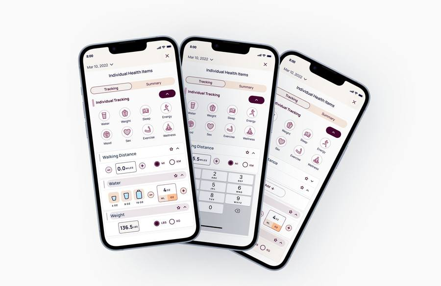
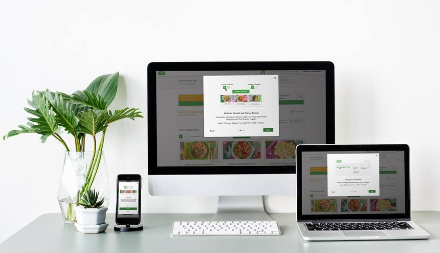
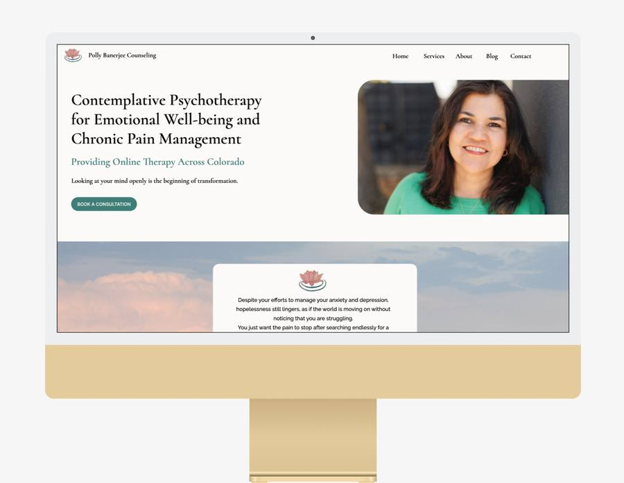
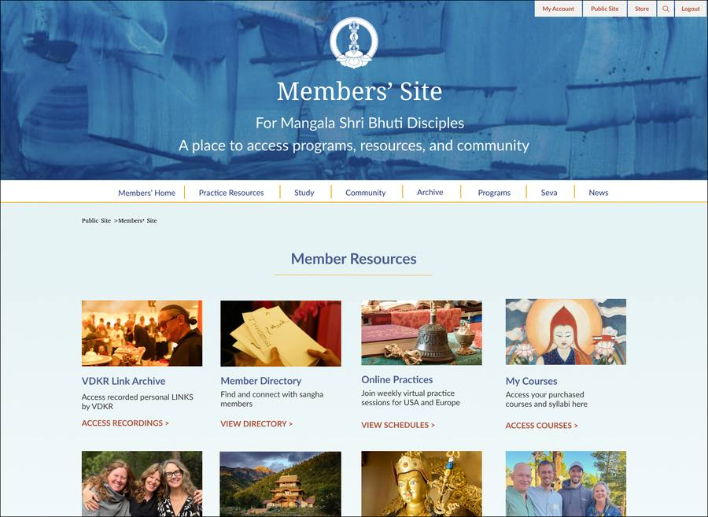

UX Design • User Research • UX Strategy • AI Workflows
I approach design by understanding how people think, what they need, and where they get stuck. My work spans research, interaction design, and implementation, creating products that are useful, accessible, and intuitive.
Designed 21 pixel-accurate metric cards mapped to Apple Health and Fitbit conventions, enabling zero-rework engineering integration.

Led research and iterative design for a retention-focused onboarding overhaul, pivoting direction based on usability testing. Shipped to production and adopted platform-wide.

Solo end-to-end redesign including research, content strategy, and implementation. Used Claude.ai throughout, resulting in a 55% increase in consultation bookings within 6 months.

Led the full homepage and navigation redesign of a Buddhist community members' site, from user research through information architecture, mega menu design, and visual direction. Currently in development.

About
I'm a UX designer and consultant who leads with strategy and brings both structure and heart to every project. With a background in psychology and user research, I start with people before I start solving. I lead teams and projects from discovery through delivery, keeping the work coherent across stakeholders all the way to launch. I integrate AI into my workflow throughout for research, synthesis, competitive analysis, and design validation.
Read the full storyMy Skills
Understanding people is at the center of my design process. I use interviews, surveys, usability testing, and behavioral insights to uncover user needs and identify opportunities for improvement.
From information architecture and user flows to wireframes and prototypes, I create experiences that help people navigate complex systems with clarity and confidence.
I integrate AI tools into research, content development, design exploration, and productivity workflows to accelerate iteration while maintaining human judgment and design ownership.
I work with design systems, reusable patterns, and accessibility best practices to create interfaces that are consistent, scalable, and usable across devices and audiences.